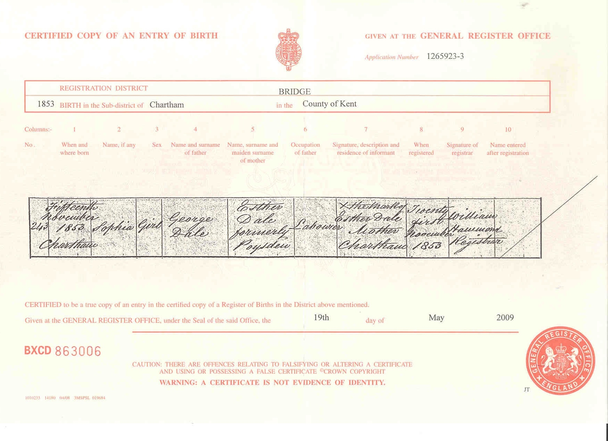
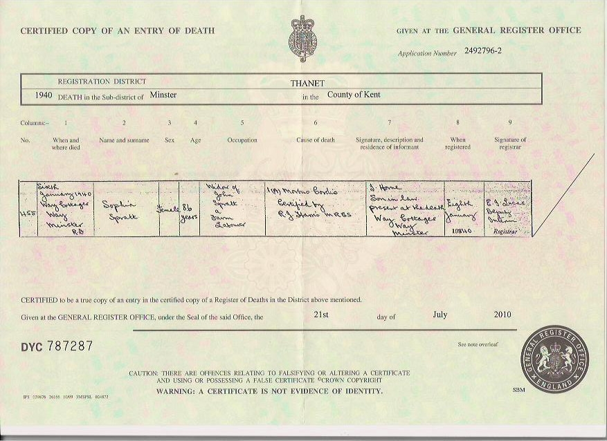
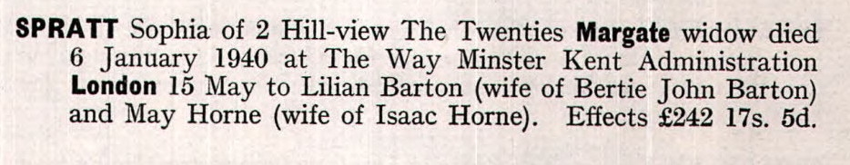
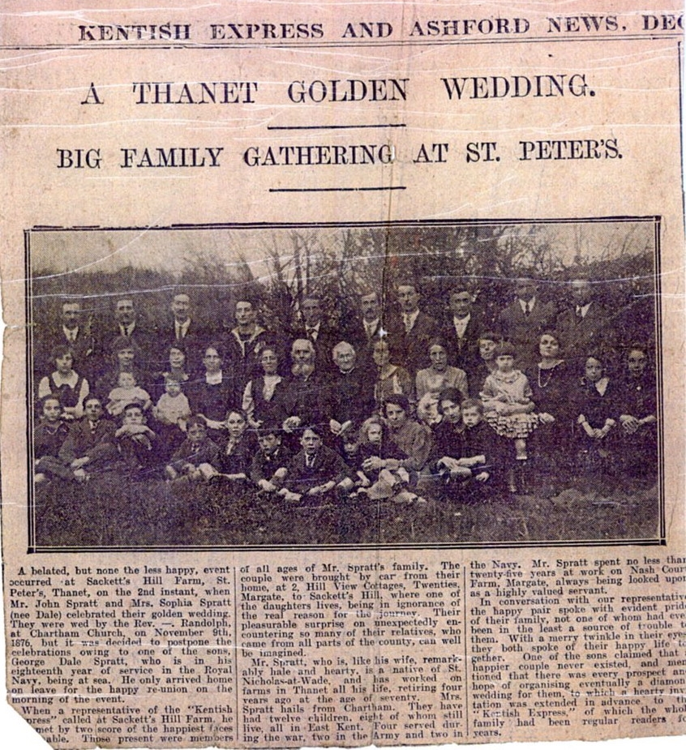
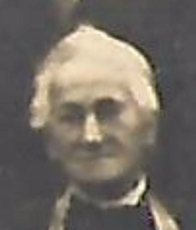

Sophia Spratt (née Dale) 1853 - 1940
[ Home ] | [ Calendar ] | [ Surnames Index ] | [ Errors ] | [ Family History ]The child of George Dale (an agricultural labourer) and Esther Poysden (a servant), Sophia Dale, the great-grandmother of Nigel Horne, was born in Chartham, Kent, England on 15 Nov 18531,2,3,4,5,6,7, was baptised there at St Mary's Church on 1 Jan 1854 and also married John Spratt (an agricultural labourer with whom she had 12 children: Leonard, Amy, Ada, Ernest, Lillian, May, Harry Dale, George Dale, Ida, Hilda, Ella and Reuben) there at St Mary's Church on 9 Nov 187610 (Rev Randolph, St Marys).
During her life, she was living in Chartham Hatch, Kent, England on 7 Apr 186115; at Tonford Farm, Thanington, Kent in 18712; at The Street, St Nicholas-at-Wade, Kent on 3 Apr 188112; at Shuart Cottage, Podden Street, St Nicholas-at-Wade, Kent on 5 Apr 189113; at 2 Nash Court Cottage, Nash Road, Margate, Kent on 31 Mar 190111 - less than a mile from her niece May Spratt who was living at 2 Nash Court Cottage, Nash Road, Margate, Kent and on 2 Apr 191116; at Nash Court Farm Cottage, Margate, Kent on 19 Jun 192117; and at Way Cottages, Minster, Thanet, Kent on 29 Sept 193914, when she was living with her daughter May, following the death of her husband on 4 Aug 1928 which is where she died on 6 Jan 19408,9 (morbus Cordis (i.e. reason unknown - likely heart failure due to old age)).
Parents
- George was born c. 1828
- Esther was born in 1825
Children
- Leonard was born on 9 Sept 1877
- Amy was born c. May 1879
- Ada was born c. May 1879
- Ernest was born on 19 Nov 1882
- Lillian was born on 23 Apr 1884
- May was born on 1 Jan 1888
- Harry Dale was born on 21 Jun 1890
- George Dale was born on 28 Jul 1891
- Ida was born on 7 Nov 1892
- Hilda was born on 7 Nov 1892
- Ella was born on 2 Feb 1895
- Reuben was born on 3 May 1896
Citations
- 1861 England Census Online publication - Provo, UT, USA: The Generations Network, Inc., 2005.Original data - Census Returns of England and Wales, 1861. Kew, Surrey, England: The National Archives of the UK (TNA): Public Record Office (PRO), 1861. Data imaged from the National
- 1871 England Census Online publication - Provo, UT, USA: The Generations Network, Inc., 2004.Original data - Census Returns of England and Wales, 1871. Kew, Surrey, England: The National Archives of the UK (TNA): Public Record Office (PRO), 1871. Data imaged from the National
- 1881 England Census Online publication - Provo, UT, USA: The Generations Network, Inc., 2004. 1881 British Isles Census Index provided by The Church of Jesus Christ of Latter-day Saints © Copyright 1999 Intellectual Reserve, Inc. All rights reserved. All use is subject to the
- 1891 England Census Online publication - Provo, UT, USA: The Generations Network, Inc., 2005.Original data - Census Returns of England and Wales, 1891. Kew, Surrey, England: The National Archives of the UK (TNA): Public Record Office (PRO), 1891. Data imaged from The National
- 1901 England Census Online publication - Provo, UT, USA: The Generations Network, Inc., 2005.Original data - Census Returns of England and Wales, 1901. Kew, Surrey, England: The National Archives of the UK (TNA): Public Record Office (PRO), 1901. Data imaged from the National
- 1911 England Census Online publication - Provo, UT, USA: Ancestry.com Operations, Inc., 2011.Original data - Census Returns of England and Wales, 1911. Kew, Surrey, England: The National Archives of the UK (TNA), 1911. Data imaged from the National Archives, London, England.
- England & Wales, FreeBMD Birth Index, 1837-1915 Online publication - Provo, UT, USA: The Generations Network, Inc., 2006.Original data - General Register Office. England and Wales Civil Registration Indexes. London, England: General Register Office. © Crown copyright. Published by permission of the Cont
- England & Wales, Death Index: 1984-2005 Online publication - Provo, UT, USA: The Generations Network, Inc., 2007.Original data - General Register Office. England and Wales Civil Registration Indexes. London, England: General Register Office. © Crown copyright. Published by permission of the Cont
- England & Wales, National Probate Calendar (Index of Wills and Administrations),1861-1941 Online publication - Provo, UT, USA: Ancestry.com Operations Inc, 2010.Original data - Principal Probate Registry. Calendar of the Grants of Probate and Letters of Administration made in the Probate Registries of the High Court of Justice in England. Londo
- England & Wales, FreeBMD Marriage Index: 1837-1915 Online publication - Provo, UT, USA: The Generations Network, Inc., 2006.Original data - General Register Office. England and Wales Civil Registration Indexes. London, England: General Register Office. © Crown copyright. Published by permission of the Cont
- 1901 England, Wales & Scotland Census - Findmypast (was age 47 and the wife of the head of the household)
- 1881 England, Wales & Scotland Census - Findmypast (was age 28 and the wife of the head of the household)
- 1891 England, Wales & Scotland Census - Findmypast (was age 37 and the wife of the head of the household)
- 1939 Register - Findmypast (was recorded at this address)
- 1861 England, Wales & Scotland Census - Findmypast (was age 7 and the daughter of the head of the household)
- 1911 Census for England & Wales - Findmypast (was age 58 and the wife of the head of the household)
- 1921 Census Of England & Wales - Findmypast (was age 67 and the wife of the head of the household)
Notes
Mum tells me that Sophia Dale used to enjoy playing cards, but only Dad would play with her. She was taken by Isaac Horne (her son-in-law, my grandfather) to his house from time-to-time by motorbike and sidecar.
Media
John Spratt - Sophia Dale - marriage cert

Sophia Dale - Birth Certificate

Sophia Dale - death certificate

Sophia Dale - Probate

spratt-dale golden wedding

1891 UK Census

1861 UK Census

1871 UK Census

1881 UK Census

1911 UK Census - page 1

1911 UK Census - page 2

1901 UK Census

Spratt Family Photograph

Sophia Dale

England & Wales births 1837-2006 - BMD/B/1853/4/AZ/000231/018
England & Wales deaths 1837-2007 - BMD/D/1940/1/AZ/001358/003
Canterbury Marriages - GBPRS/CANT/M/97244494/2
England Marriages 1538-1973 - R_848405105/2
England & Wales marriages 1837-2008 - BMD/M/1876/4/AZ/000077/248
1939 Register Transcription - TNA-R39-1820-1820H-015-06
1939 Register Transcription - TNA-R39-1820-1820H-015-08
1939 Register Transcription - TNA-R39-1820-1820H-015-09
1861 England, Wales & Scotland Census - GBC/1861/0003417884
1911 Census for England & Wales - GBC/1911/RG14/04484/0189/2
1939 Register Transcription - TNA-R39-1820-1820H-015-07
Kent Baptisms - GBPRS/CANT/B/96193112
1921 Census of England & Wales - GBC/1921/RG15/04434/0087/02
Family Tree

Map
Generated by ged2site. Last updated on Jul 3, 2024
Known Issues
May have been living with mother on 7 Apr 1861, but the addresses don't match or aren't detailed enough to be sure
May have been living with father on 7 Apr 1861, but the addresses don't match or aren't detailed enough to be sure